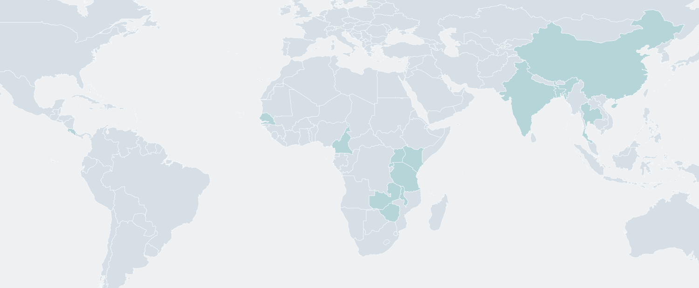

AI & EARLY DETECTION
Cervical screening,
mapped by outcomes.
AI screening evidence and related early-intervention work in underserved communities worldwide.
+ 2 related initiatives
Research reviewed 17 September 2026
Project geography
Swipe to explore

AMERICASAFRICAASIASearch by place, year or keyword.
Search tips
Try Africa, Kenya 2025, or 2020–2026. Search reported outcomes and evidence types such as patient examinations or slide scans. Clear the search to show all projects.
Projects are listed in project-number order. Related early-intervention initiatives are included and labelled; they do not establish AI effectiveness.
Scroll to browse more projects.
References
Sources reviewed
Loading sources from project records…
Canadian review notes
Targeted review, 17 September 2026: Canadian funding records, conference findings and institutional reports. This is not an exhaustive database search.
- CIHR Funding Decisions Database: the reviewed AI brachytherapy-planning award concerns treatment of established cancer, so it was not added as an underserved screening success.
- Canadian Cancer Research Conference 2025: ASPIRE Malongo supplies screening and treatment findings; it is included above as non-AI evidence.
- IDRC health research portfolio: describes an Argentine cervical-image AI feasibility project. The reviewed description provides no clinical outcome figures, so it is a research lead, not a demonstrated success.
- Canadian Partnership Against Cancer and CIHR HPV-screening research: provide screening-equity and self-collection context; these sources do not establish AI program outcomes.
EHDS catalogue & project review
Queried 17 September 2026: the public HealthData@EU catalogue for cervical, HPV and papillomavirus. Both catalogue search and metadata queries returned no dataset records; an unfiltered check also returned zero. This is an inconclusive catalogue result, not evidence that relevant projects or datasets do not exist. No patient data were accessed.
EHDS catalogue documentation describes dataset discovery and access requests, rather than a registry of demonstrated program success. Most secondary-use rules begin applying in March 2029, according to the European Commission’s implementation timeline.
- EUCAIM / Cancer Image Europe: Digital Europe-supported infrastructure for cancer imaging and AI research. Its screening collaboration proposal is a relevant research lead; the reviewed sources do not establish successful AI cervical screening in underserved populations.
- EHDS2 Pilot and TEHDAS2: data-sharing infrastructure and implementation guidance. These are not counted as cervical-screening delivery programs.
- European Commission Initiative on Cervical Cancer: a complementary source for screening recommendations and quality assurance, not an EHDS-derived AI deployment outcome.
No new program or map location was added from this review because qualifying implementation outcomes were not verified.
Read the evidence in context
Scope: AI-assisted cervical screening in underserved or resource-limited populations, with reported findings, sponsors or partners, and a published contact. Sources include NIH/NLM PubMed, NCI, EU CORDIS, European institutions and international research reports. PubMed indexing does not imply NIH funding or endorsement. Research and provider claims are labeled separately from implementation outcomes.
Screening reach, diagnostic accuracy and successful treatment are different outcomes. These reports do not establish that AI itself reduced cervical-cancer deaths. Study populations and reference tests differ, so percentages are not a league table.
For an implementation partnership, ask about treatment completion, time to treatment, loss to follow-up and cost per woman treated. Published phone numbers have not been called; office and directory contacts are identified below.
About map locations and evidence
Locations show documented study or implementation coverage, not a live service directory. Dawa Health’s company-listed cities are shown within their country markers; cervical-screening deployment in each city is unverified. European institutions and funders are identified in the records; markers indicate study populations, not sponsor headquarters. Costa Rica represents historical validation, not a verified active service. Markers are offset into nearby open water for readability; highlighted country outlines identify the selected geography. Nearby Kinondo (Kenya) and Tanga (Tanzania) share a coastal marker; their projects remain distinct. Multi-country outcomes are pooled, not country-specific.